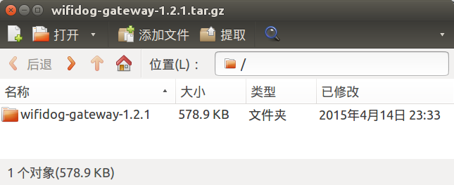

开发package软件包
在开发智能路由器的过程中，如果有一个新需求，那先去google一下，到openwrt官方仓库里找一找package，如果没有的话，再自己开发一个。避免重新发明轮子。
比如商业wifi（广告wifi）需要的上网欢迎页，已经有nodogsplash实现了；上网欢迎页加上认证计费，有wifidog实现了。
远程云管理方面，有autossh实现了实时ssh管理（可少量调试使用，服务器负载高，无法承受数百台路由器）；有TR-069 cwmp协议的软件（比如easycwmp、freecwmp）实现了定时管理（但用的是XML格式，已淘汰，配套开发维护服务端的成本较高）。
目录结构
如果确定市面上的软件无法满足需求，需要自己开发的话，也很简单。在package目录中有很多软件，看一看，会发现包格式如下：
| 文件 | 是否必须 | 用途 |
|---|---|---|
| package/Makefile | 是 | 定义了软件名称、版本、编译、安装等指令 |
| package/files/ | 否 | 启动脚本、配置文件等 |
| package/patches/ | 否 | 代码的补丁 |
以wifidog为例（package在https://coding.net/u/openwrtio/p/packages/git/tree/for-12.09/net/wifidog），Makefile内容如下：
include $(TOPDIR)/rules.mk
PKG_NAME:=wifidog
PKG_VERSION:=1.2.1
PKG_RELEASE=2
PKG_LICENSE:=GPL-2.0
PKG_MAINTAINER:=sinkcup <sinkcup@163.com>
PKG_SOURCE_VERSION=$(PKG_VERSION)
PKG_SOURCE:=$(PKG_NAME)-gateway-$(PKG_SOURCE_VERSION).tar.gz
PKG_SOURCE_URL:=http://downloads.openwrt.io/sources/ \
https://github.com/wifidog/wifidog-gateway/releases/download/$(PKG_SOURCE_VERSION)/
PKG_MD5SUM:=3c9c35968f154b1c9224245a5d708d5f
PKG_BUILD_DIR:=$(BUILD_DIR)/$(PKG_NAME)-gateway-$(PKG_SOURCE_VERSION)
PKG_FIXUP:=autoreconf
PKG_INSTALL:=0
include $(INCLUDE_DIR)/package.mk
define Package/wifidog
SUBMENU:=Captive Portals
SECTION:=net
CATEGORY:=Network
DEPENDS:=+iptables-mod-extra +iptables-mod-ipopt +kmod-ipt-nat +iptables-mod-nat-extra +libpthread
TITLE:=A wireless captive portal solution
URL:=http://www.wifidog.org
endef
define Package/wifidog/description
The Wifidog project is a complete and embeddable captive
portal solution for wireless community groups or individuals
who wish to open a free Hotspot while still preventing abuse
of their Internet connection.
endef
define Package/wifidog/conffiles
/etc/wifidog.conf
endef
define Package/wifidog/install
$(INSTALL_DIR) $(1)/usr/bin
$(INSTALL_BIN) $(PKG_BUILD_DIR)/scripts/init.d/wifidog $(1)/usr/bin/wifidog-init
$(INSTALL_BIN) $(PKG_INSTALL_DIR)/usr/bin/wifidog $(1)/usr/bin/
$(INSTALL_BIN) $(PKG_INSTALL_DIR)/usr/bin/wdctl $(1)/usr/bin/
$(INSTALL_DIR) $(1)/usr/lib
$(CP) $(PKG_INSTALL_DIR)/usr/lib/libhttpd.so* $(1)/usr/lib/
$(INSTALL_DIR) $(1)/etc
$(INSTALL_DATA) $(PKG_BUILD_DIR)/wifidog.conf $(1)/etc/
$(INSTALL_DATA) $(PKG_BUILD_DIR)/wifidog-msg.html $(1)/etc/
$(INSTALL_DIR) $(1)/etc/init.d
$(INSTALL_BIN) ./files/wifidog.init $(1)/etc/init.d/wifidog
endef
$(eval $(call BuildPackage,wifidog))
软件包变量
| 变量名 | 是否必须 | 用途 |
|---|---|---|
| PKG_VERSION | 是 | 包版本，一般与代码版本一致，建议使用语义化版本号 |
| PKG_RELEASE | 是 | 第几次打包。比如版本没变，第一次打包，PKG_RELEASE为1，发布了wifidog_1.2.1-1_ralink.ipk，然后发现配置文件不佳，进行第二次打包，PKG_RELEASE需改为2，会生成wifidog_1.2.1-2_ralink.ipk。 |
| PKG_SOURCE_VERSION | 否 | 代码版本，比如使用git的tag，建议使用语义化版本号。无压缩包，而从git clone时，使用commit id。 |
| PKG_SOURCE | 是 | 代码文件名，下载完毕会保存到dl目录。 |
| PKG_SOURCE_URL | 是 | 代码下载链接的目录（下载时会自动加上PKG_SOURCE文件名），支持多个镜像，每行一个 |
| PKG_BUILD_DIR | 是 | 编译软件包的目录 |
可以看到wifidog的代码文件名是wifidog-gateway-1.2.1.tar.gz，下载路径有2个：
- http://downloads.openwrt.io/sources/
- https://github.com/wifidog/wifidog-gateway/releases/download/1.2.1/
拼成完整的下载链接就是：
- http://downloads.openwrt.io/sources/wifidog-gateway-1.2.1.tar.gz
- https://github.com/wifidog/wifidog-gateway/releases/download/1.2.1/wifidog-gateway-1.2.1.tar.gz
下载之后，解压缩，会发现子目录是wifidog-gateway-1.2.1，如图：

所以PKG_BUILD_DIR要设置正确，才能顺利编译。
宏定义
Package/$(PKG_NAME)
| 变量名 | 是否必须 | 用途 |
|---|---|---|
| CATEGORY | 是 | 一级分类 |
| SUBMENU | 否 | 二级分类 |
| DEPENDS | 否 | 依赖。加号“+”表示自动选中此依赖，比较常用。 |
| TITLE | 否 | 简介 |
Package/$(PKG_NAME)/conffiles （可选）
配置文件列表。安装时，如果配置文件已存在，则不会被覆盖。卸载时，如果配置文件被修改过，则不会被删除。
Package/$(PKG_NAME)/install （可选）
安装指令。比如拷贝一些文件。常用的有：INSTALL_DIR、INSTALL_BIN、INSTALL_DATA、CP。
业务代码
可以看到package里面只是打包ipk所用的启动脚本、配置文件等，没有业务代码。业务代码在网上，通过PKG_SOURCE_URL指定下载链接，编译时自动下载。因为代码是单独的项目，比如dnsmasq、wifidog，是C、C++、shell等语言开发的，一般都是跨平台的，电脑、手机、路由器都能用，有独立的项目网址，所以不会放在package里。
所以想实现一个需求，首先要做的是开发业务代码。比如wifidog的业务代码在：https://github.com/wifidog/wifidog-gateway，是开源项目，大家一起写代码，合并进去即可。
如果已有的项目不能满足需求，那就需要自行开发新项目。比如owmp，
- 业务代码在：https://coding.net/u/openwrtio/p/owmp/git/tree/0.4.0/，只有一个shell文件和一个
Makefile。 - package在：https://coding.net/u/openwrtio/p/packages/git/tree/for-12.09/admin/owmp
发布
开发完毕，编译打包生成ipk，发布到opkg软件仓库里即可。请按照之前的文档《搭建opkg软件仓库》进行操作。